Offering professional home repair services:
- Tankless water heater installation & service
- Water heater replacement & repair
- Drain cleaning
- Polybutylene (Quest) pipe repair & replacement
- Leak repair
- …and much more!
In the Hampton Roads area, including:
- Chesapeake
- Suffolk
- Virginia Beach
- Norfolk
- Hampton
- Newport News
With over 20 years of experience and a passion for fast, clean, and friendly service, there's no plumbing task in your home or business we cant handle!
Call, text, or email us for an estimate today!
All major credit cards are accepted.
 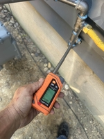
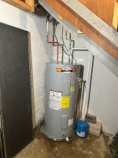
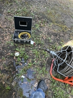
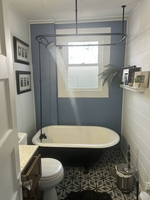
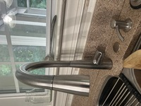
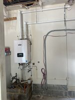
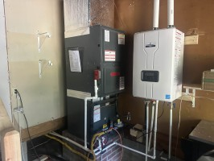
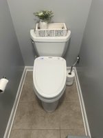
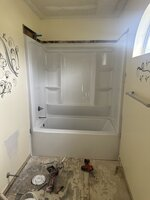
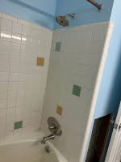
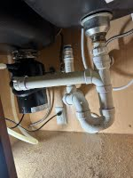
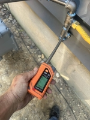
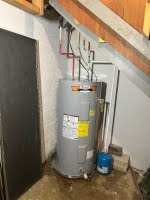
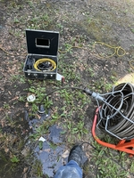
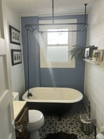
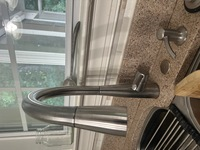
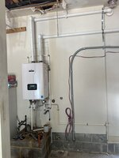
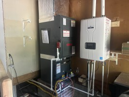
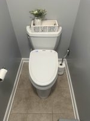
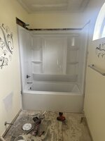
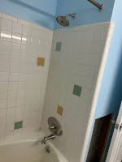
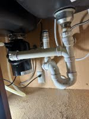
Expert Polybutylene (Quest) Pipe Repair & Replacement in Hampton Roads
If your home was built between the late 1970s and mid-1990s, it may have polybutylene plumbing—often called Quest pipe. While common at the time, these pipes are now known to crack, leak, and fail without warning, leading to expensive water damage and even denied insurance claims.
At Dr. Plumber, we specialize in polybutylene pipe inspection, repair, and full-home replacement. Our licensed plumbers use modern, durable piping materials like PEX or copper, giving you a long-lasting plumbing system you can trust.
Don’t wait for a major leak to happen. Protect your home today. Call 757-401-4296 to schedule a free estimate for polybutylene pipe replacement.
Why Replace Polybutylene Pipes?
- Frequent leaks and water damage risk
- Known issues with cracking and brittleness
- Insurance companies may refuse coverage
- Adds value and peace of mind for homeowners
Our Services Include:
- Whole-home repiping (PEX or copper)
- Spot repairs for minor leaks
- Polybutylene pipe inspection & identification
- Fast emergency response when leaks occur